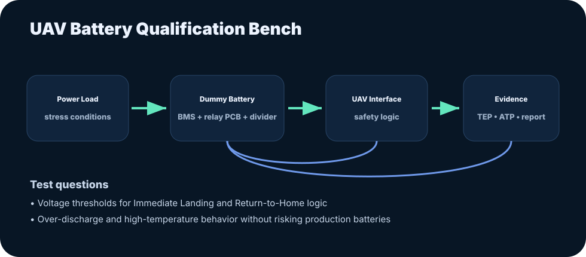

01
System test ownership
Building setups, procedures, datasets, and reports that make system behavior measurable and defensible.
UAV/UAS systems test engineer with a robotics and controls foundation. I turn complex hardware, software, and certification questions into validation workflows, evidence packages, and reliable technical stories.
The Kumar Harsh brand is built around one idea: complex autonomous systems become reliable when testing, controls, data, and documentation are designed together.

These pillars help recruiters and collaborators quickly understand the engineering signature behind the work.
Building setups, procedures, datasets, and reports that make system behavior measurable and defensible.
PID, MPC, EKF, system identification, and robotics experience across UAV, humanoid, and mobile robot contexts.
TEP, ATP, verification reports, conformity evidence, compliance workflows, and regulator-ready thinking.
Python and standards-based automation for reducing manual engineering effort and improving repeatability.

Master Thesis · TU Dortmund / Fraunhofer IML
Nonlinear system identification and predictive control using Sparse Identification of Nonlinear Dynamics with control inputs.
Open case study
Professional Case Study · Wingcopter GmbH
Battery test bench architecture, dummy-battery concept, stress testing, SoC mapping, and certification evidence for UAV systems.
Open case study
Research Case Study · TU Dortmund University
6DoF IMU datasets, EKF sensor fusion, PID tuning, ROS2 migration, and Crazyflie/Crazyswarm indoor logistics work.
Open case studyMy portfolio connects early aircraft design and autopilot control work with graduate robotics research and present-day UAV system test engineering.
See experience timelineEmail: hkharsh411@gmail.com
Phone: +49 17627801361
LinkedIn: linkedin.com/in/hkharsh786
GitHub: github.com/hkharsh786